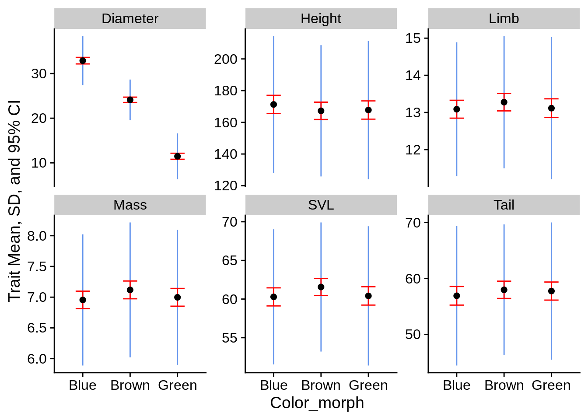

9 Wrangling, reshaping, and tidying data with tidyr
9.1 Tidy data
Most of the previous appendices have required you to have your data in a tidy format. Tidy data consist of data frames with the following characteristics:
- Each column is a different variable
- Each row is a single observation
- Each cell is a single value
The packages in the tidyverse are generally designed to operate on tidy data; however, other functions may require the data to be in a different shape. It’s also frequently convenient to record field data in a non-tidy format. The tidyr package is designed to reshape your data. For more information on tidy data, please see this article.
We’re going to be using some new datasets for this chapter; if you don’t have them already, download them here and put them in your “example_data” directory.
library(tidyverse)
library(cowplot)
theme_set(theme_cowplot())
lizards <- read_csv("example_data/anoles.csv") # See Appendix A if you don't have this data
succession_data_wide <- read_csv("example_data/succession_wide_untidy.csv")
yeast_data <- read_csv("example_data/yeast_data_partial.csv")9.2 Going from many columns to many rows: pivot_longer()
Let’s look at the succession data file; this is slightly modified data from Fall 2018, which was collected as part of the first lab (Section @ref(#lab1)).
View(succession_data_wide)| Type | Team | Sample | Quadrant | Distance | DBH | Acer negundo (Boxwood elder) | Bumelia lanuginosa (Gum elastic) | Carya illinoiensis (Pecan) | Celtis spp. (Hackberry) | Fraxinus texana (Texas ash) | Juniperus spp. (Juniper) | Melia azederach (Chinaberry) | Morus rubra (Red mulberry) | Populus deltoides (Cottonwood) | Prunus caroliniana (Laurel cherry) | Quercus buckleyi (Spanish oak) | Quercus fusiformis (Live oak) | Quercus stellata (Post Oak) | Triadica sebifera (Chinese Tallow) | Ulmus americana (American elm) | Ulmus crassifolia (Cedar elm) |
|---|---|---|---|---|---|---|---|---|---|---|---|---|---|---|---|---|---|---|---|---|---|
| P-C | A | 1 | a | 4 | 15.0 | NA | NA | NA | NA | NA | 1 | NA | NA | NA | NA | NA | NA | NA | NA | NA | NA |
| P-U | A | 1 | a | 4 | NA | NA | NA | NA | NA | NA | NA | NA | NA | NA | NA | NA | 1 | NA | NA | NA | NA |
| P-C | A | 1 | b | 5 | 16.5 | NA | NA | NA | NA | NA | 1 | NA | NA | NA | NA | NA | NA | NA | NA | NA | NA |
| P-U | A | 1 | b | 3 | NA | NA | NA | NA | NA | NA | NA | NA | NA | NA | NA | NA | 1 | NA | NA | NA | NA |
| P-C | A | 1 | c | 2 | 15.0 | NA | NA | NA | NA | NA | 1 | NA | NA | NA | NA | NA | NA | NA | NA | NA | NA |
| P-U | A | 1 | c | 4 | NA | NA | NA | NA | NA | NA | 1 | NA | NA | NA | NA | NA | NA | NA | NA | NA | NA |
| P-C | A | 1 | d | 4 | 14.0 | NA | NA | NA | 1 | NA | NA | NA | NA | NA | NA | NA | NA | NA | NA | NA | NA |
| P-U | A | 1 | d | 2 | NA | NA | NA | NA | 1 | NA | NA | NA | NA | NA | NA | NA | NA | NA | NA | NA | NA |
| P-C | A | 2 | a | 2 | 21.5 | NA | NA | NA | NA | NA | NA | NA | NA | NA | NA | NA | NA | NA | NA | NA | 1 |
| P-U | A | 2 | a | 3 | NA | NA | NA | NA | NA | NA | NA | NA | NA | NA | NA | NA | NA | NA | NA | NA | 1 |
A quick description of the columns:
- Type: Contains information on both the habitat type and Canopy/Understory
- Team, Sample, Quadrant: identifiers for where the data were collected
- Distance: Distance in meters fromt the central point to the tree
- DBH: Diameter at breast height for canopy trees
- 16 species columns: These indicate whether the named species is present with a 1; there should only be a single 1 per row.
This clearly does not meet the definition of tidy data; the “Species” variable is split between columns, and the habitat type and tree type are both combined into a single “type” column.
The first step to tidying this data is consolidate the last sixteen columns; we’re going to use pivot_longer() for that. In its simplest form, pivot_longer() converts several columns into two: one with the original column names, and the other with the original column values. This will result in a data frame with more rows than the original (hence, “longer”).
succession_data_wide |>
pivot_longer(
# The first argument is the column names you want to reshape
# This uses the same syntax of select() and across() from dplyr
cols = -c(Type:DBH), # minus sign grabs everything NOT between Type & DBH:
names_to = "Species", # Name of the column that stores the old column names
values_to = "is_present") |> # Name of the oclumn that stores old cell values
View()| Type | Team | Sample | Quadrant | Distance | DBH | Species | is_present |
|---|---|---|---|---|---|---|---|
| P-C | A | 1 | a | 4 | 15 | Acer negundo (Boxwood elder) | NA |
| P-C | A | 1 | a | 4 | 15 | Bumelia lanuginosa (Gum elastic) | NA |
| P-C | A | 1 | a | 4 | 15 | Carya illinoiensis (Pecan) | NA |
| P-C | A | 1 | a | 4 | 15 | Celtis spp. (Hackberry) | NA |
| P-C | A | 1 | a | 4 | 15 | Fraxinus texana (Texas ash) | NA |
| P-C | A | 1 | a | 4 | 15 | Juniperus spp. (Juniper) | 1 |
| P-C | A | 1 | a | 4 | 15 | Melia azederach (Chinaberry) | NA |
| P-C | A | 1 | a | 4 | 15 | Morus rubra (Red mulberry) | NA |
| P-C | A | 1 | a | 4 | 15 | Populus deltoides (Cottonwood) | NA |
| P-C | A | 1 | a | 4 | 15 | Prunus caroliniana (Laurel cherry) | NA |
If you’ll notice, the first 16 rows are identical in the Type:DBH columns, while Species and is_present vary. A few alternative ways to do the same thing:
# The only difference between these is the .cols argument
succession_data_wide |> pivot_longer(
.cols = 7:22, # positions of the columns to pivot
names_to = "Species", values_to = "is_present")
succession_data_wide |> pivot_longer(
-c(Type, Team, Sample, Quadrant, Distance, DBH), # explicitly list names
names_to = "Species", values_to = "is_present")
succession_data_wide |> pivot_longer(
# You can use ranges of column names to keep, though that's not practical here
`Acer negundo (Boxwood elder)`:`Ulmus crassifolia (Cedar elm)`,
names_to = "Species", values_to = "is_present")
succession_data_wide |> pivot_longer(
.cols = contains("("), # graps all columns with an open parentheses in them
names_to = "Species", values_to = "is_present")Note that the .cols argument generally doesn’t have quotations around its column names, while the names_to and values_to do. The simplest explanation for it is that the .cols columns already exist in the data, so R knows how to find them; the others don’t, so we use quotes to create the names (This isn’t entirely true, but the full details are quite complicated and it’s a useful rule of thumb for tidyverse functions).
One thing to note about our output is that there’s a lot of NA values in is_present, indicating species that were not found at each point. We don’t really care about those, so let’s get rid of them.
succession_longer =
succession_data_wide |> pivot_longer(
cols = -c(Type:DBH), names_to = "Species", values_to = "is_present") |>
filter(!is.na(is_present)) |> # Remove missing values
select(-is_present) # This column is no longer useful
View(succession_longer)| Type | Team | Sample | Quadrant | Distance | DBH | Species |
|---|---|---|---|---|---|---|
| P-C | A | 1 | a | 4 | 15.0 | Juniperus spp. (Juniper) |
| P-U | A | 1 | a | 4 | NA | Quercus fusiformis (Live oak) |
| P-C | A | 1 | b | 5 | 16.5 | Juniperus spp. (Juniper) |
| P-U | A | 1 | b | 3 | NA | Quercus fusiformis (Live oak) |
| P-C | A | 1 | c | 2 | 15.0 | Juniperus spp. (Juniper) |
| P-U | A | 1 | c | 4 | NA | Juniperus spp. (Juniper) |
| P-C | A | 1 | d | 4 | 14.0 | Celtis spp. (Hackberry) |
| P-U | A | 1 | d | 2 | NA | Celtis spp. (Hackberry) |
| P-C | A | 2 | a | 2 | 21.5 | Ulmus crassifolia (Cedar elm) |
| P-U | A | 2 | a | 3 | NA | Ulmus crassifolia (Cedar elm) |
(( Add example to practice with genotype data))
9.3 Splitting and merging columns: separate() and unite()
To fully tidy this, we need to split the “Type” column into habitat type and tree type columns. The separate() function is useful for this.
succession_sep = succession_longer |>
separate(col = Type, # Column to separate; note that the arg is col, not .col
into = c("Habitat", "Tree_type"), # Names of the new columns to separate into
sep = "-") # the character used to mark the separation
View(succession_sep)| Habitat | Tree_type | Team | Sample | Quadrant | Distance | DBH | Species |
|---|---|---|---|---|---|---|---|
| P | C | A | 1 | a | 4 | 15.0 | Juniperus spp. (Juniper) |
| P | U | A | 1 | a | 4 | NA | Quercus fusiformis (Live oak) |
| P | C | A | 1 | b | 5 | 16.5 | Juniperus spp. (Juniper) |
| P | U | A | 1 | b | 3 | NA | Quercus fusiformis (Live oak) |
| P | C | A | 1 | c | 2 | 15.0 | Juniperus spp. (Juniper) |
| P | U | A | 1 | c | 4 | NA | Juniperus spp. (Juniper) |
| P | C | A | 1 | d | 4 | 14.0 | Celtis spp. (Hackberry) |
| P | U | A | 1 | d | 2 | NA | Celtis spp. (Hackberry) |
| P | C | A | 2 | a | 2 | 21.5 | Ulmus crassifolia (Cedar elm) |
| P | U | A | 2 | a | 3 | NA | Ulmus crassifolia (Cedar elm) |
Note that the sep argument can be either text or a integer(s); if it’s a character vector, the character(s) are removed during the split (as with above). If sep is an integer (or integer vector), then the split is made after that/those position(s) in the text without removing anything.
It would also be useful to have a column that specifically identifies the each sample point; currenlty, that information is split between the Habitat, Team, and Sample columns. The unite() function does this (it’s the complement of separate).
succession_tidy = succession_sep |>
unite(col = "sample_point", # Name of new colum
Habitat, Team, Sample, # columns to unite (note; these are all seaprate args)
sep = "-", # separate the columns with a dash
remove = FALSE # by default, unite() removes the columns to separate; this disables that because we want to keep Habitat
) |>
select(-Team, -Sample)
succession_tidy |> View()| sample_point | Habitat | Tree_type | Quadrant | Distance | DBH | Species |
|---|---|---|---|---|---|---|
| P-A-1 | P | C | a | 4 | 15.0 | Juniperus spp. (Juniper) |
| P-A-1 | P | U | a | 4 | NA | Quercus fusiformis (Live oak) |
| P-A-1 | P | C | b | 5 | 16.5 | Juniperus spp. (Juniper) |
| P-A-1 | P | U | b | 3 | NA | Quercus fusiformis (Live oak) |
| P-A-1 | P | C | c | 2 | 15.0 | Juniperus spp. (Juniper) |
| P-A-1 | P | U | c | 4 | NA | Juniperus spp. (Juniper) |
| P-A-1 | P | C | d | 4 | 14.0 | Celtis spp. (Hackberry) |
| P-A-1 | P | U | d | 2 | NA | Celtis spp. (Hackberry) |
| P-A-2 | P | C | a | 2 | 21.5 | Ulmus crassifolia (Cedar elm) |
| P-A-2 | P | U | a | 3 | NA | Ulmus crassifolia (Cedar elm) |
An alternative option to unite() is to use a combination of mutate() and paste():
succession_sep |>
mutate(sample_point = paste(Habitat, Team, Sample, sep = "-")) |>
select(-Team, -Sample) |>
View() # The column order will be different, but otherwise it's the same.9.4 Pivoting multiple columns
We’re going to take a look a dataset from Brauer et al (2008). The experiment tested yeast gene expression under nutrient limitation (for several different nutrients & several different concentrations).
View(yeast_data)| gene_name | bio_process | mol_func | syst_id | G0.05 | G0.1 | G0.15 | G0.2 | G0.25 | G0.3 | N0.05 | N0.1 | N0.15 | N0.2 | N0.25 | N0.3 | P0.05 | P0.1 | P0.15 | P0.2 | P0.25 | P0.3 | S0.05 | S0.1 | S0.15 | S0.2 | S0.25 | S0.3 | L0.05 | L0.1 | L0.15 | L0.2 | L0.25 | L0.3 | U0.05 | U0.1 | U0.15 | U0.2 | U0.25 | U0.3 |
|---|---|---|---|---|---|---|---|---|---|---|---|---|---|---|---|---|---|---|---|---|---|---|---|---|---|---|---|---|---|---|---|---|---|---|---|---|---|---|---|
| SFB2 | ER to Golgi transport | molecular function unknown | YNL049C | -0.24 | -0.13 | -0.21 | -0.15 | -0.05 | -0.05 | 0.20 | 0.24 | -0.20 | -0.42 | -0.14 | 0.09 | -0.26 | -0.20 | -0.22 | -0.31 | 0.04 | 0.34 | -0.51 | -0.12 | 0.09 | 0.09 | 0.20 | 0.08 | 0.18 | 0.18 | 0.13 | 0.20 | 0.17 | 0.11 | -0.06 | -0.26 | -0.05 | -0.28 | -0.19 | 0.09 |
| NA | biological process unknown | molecular function unknown | YNL095C | 0.28 | 0.13 | -0.40 | -0.48 | -0.11 | 0.17 | 0.31 | 0.00 | -0.63 | -0.44 | -0.26 | 0.21 | -0.09 | -0.04 | -0.10 | 0.15 | 0.20 | 0.63 | 0.53 | 0.15 | -0.01 | 0.12 | -0.15 | 0.32 | 0.16 | 0.09 | 0.02 | 0.04 | 0.03 | 0.01 | -1.02 | -0.91 | -0.59 | -0.61 | -0.17 | 0.18 |
| QRI7 | proteolysis and peptidolysis | metalloendopeptidase activity | YDL104C | -0.02 | -0.27 | -0.27 | -0.02 | 0.24 | 0.25 | 0.23 | 0.06 | -0.66 | -0.40 | -0.46 | -0.43 | 0.18 | 0.22 | 0.33 | 0.34 | 0.13 | 0.44 | 1.29 | -0.32 | -0.47 | -0.50 | -0.42 | -0.33 | -0.30 | 0.02 | -0.07 | -0.05 | -0.13 | -0.04 | -0.91 | -0.94 | -0.42 | -0.36 | -0.49 | -0.47 |
| CFT2 | mRNA polyadenylylation* | RNA binding | YLR115W | -0.33 | -0.41 | -0.24 | -0.03 | -0.03 | 0.00 | 0.20 | -0.25 | -0.49 | -0.49 | -0.43 | -0.26 | 0.05 | 0.04 | 0.03 | -0.04 | 0.08 | 0.21 | 0.41 | -0.43 | -0.21 | -0.33 | -0.05 | -0.24 | -0.27 | -0.28 | -0.05 | 0.02 | 0.00 | 0.08 | -0.53 | -0.51 | -0.26 | 0.05 | -0.14 | -0.01 |
| SSO2 | vesicle fusion* | t-SNARE activity | YMR183C | 0.05 | 0.02 | 0.40 | 0.34 | -0.13 | -0.14 | -0.35 | -0.09 | -0.08 | -0.58 | -0.14 | -0.12 | -0.16 | 0.18 | 0.21 | 0.08 | 0.23 | -0.29 | -0.70 | 0.05 | 0.10 | -0.07 | -0.10 | -0.32 | -0.59 | -0.13 | 0.00 | -0.11 | 0.04 | 0.01 | -0.45 | -0.09 | -0.13 | 0.02 | -0.09 | -0.03 |
| PSP2 | biological process unknown | molecular function unknown | YML017W | -0.69 | -0.03 | 0.23 | 0.20 | 0.00 | -0.27 | 0.17 | -0.40 | -0.54 | -1.19 | -0.42 | 1.89 | -0.32 | -0.06 | -0.62 | -0.50 | -0.37 | NA | NA | -0.20 | -0.09 | 0.06 | -0.19 | -0.14 | -0.17 | -0.07 | 0.25 | -0.21 | 0.12 | -0.11 | NA | -0.65 | 0.09 | 0.06 | -0.07 | -0.10 |
| RIB2 | riboflavin biosynthesis | pseudouridylate synthase activity* | YOL066C | -0.55 | -0.30 | -0.12 | -0.03 | -0.16 | -0.11 | 0.04 | 0.00 | -0.63 | -0.51 | -0.37 | -0.24 | -0.35 | -0.32 | -0.39 | -0.60 | -0.29 | -0.25 | -0.14 | -0.50 | -0.19 | -0.13 | -0.01 | -0.04 | -0.02 | -0.05 | 0.27 | 0.24 | 0.05 | 0.19 | 0.07 | -0.31 | -0.08 | 0.12 | 0.05 | 0.06 |
| VMA13 | vacuolar acidification | hydrogen-transporting ATPase activity, rotational mechanism | YPR036W | -0.75 | -0.12 | -0.07 | 0.02 | -0.32 | -0.41 | 0.11 | -0.16 | -0.26 | -0.42 | 0.18 | 0.13 | -0.19 | -0.25 | -0.25 | -0.47 | -0.24 | -0.49 | 0.09 | 0.13 | 0.15 | -0.02 | 0.24 | -0.08 | -0.11 | -0.01 | 0.15 | 0.15 | 0.00 | 0.03 | -0.40 | -0.02 | 0.26 | 0.31 | 0.14 | 0.11 |
| EDC3 | deadenylylation-independent decapping | molecular function unknown | YEL015W | -0.24 | -0.22 | 0.14 | 0.06 | 0.00 | -0.13 | 0.30 | 0.07 | -0.30 | -0.01 | 0.15 | 0.13 | -0.26 | -0.20 | -0.22 | -0.17 | -0.23 | -0.38 | -0.35 | -0.14 | 0.10 | -0.04 | 0.22 | 0.02 | 0.12 | -0.01 | 0.17 | 0.07 | 0.10 | 0.11 | 0.01 | -0.16 | 0.07 | 0.20 | 0.02 | 0.10 |
| VPS5 | protein retention in Golgi* | protein transporter activity | YOR069W | -0.16 | -0.38 | 0.05 | 0.14 | -0.04 | -0.01 | 0.39 | 0.20 | 0.27 | 0.19 | 0.20 | 0.06 | -0.23 | -0.20 | -0.07 | -0.13 | -0.14 | -0.42 | -0.38 | -0.14 | 0.00 | -0.06 | 0.16 | -0.15 | -0.20 | -0.18 | 0.11 | 0.00 | 0.02 | 0.09 | -0.26 | -0.13 | -0.10 | 0.07 | -0.04 | -0.12 |
The first four columns are single variables (gene name, biological process, molecular function, and systematic_id). The remaining columns (G0.05 through U0.3) contain TWO variables in their name: the nutrient that was added to the substrate (first letter) and rate at which it was added (the rest). The values in these columns is the gene expression level. To tidy the data, we need to convert these into three columns:
- Substrate
- Concentration
- Gene expression
While we could do this with a combination of pivot_longer() and separate(), pivot_longer() can do both tasks at once with a few extra arguments.
yeast_data |>
pivot_longer(G0.05:U0.3,
names_to = c("Substrate", "Concentration"), # The names will go into these columns
names_sep = 1, # separate the names between columns after the first character
values_to = "Gene_expression") |>
glimpse()
## Rows: 199,332
## Columns: 7
## $ gene_name <chr> "SFB2", "SFB2", "SFB2", "SFB2", "SFB2", "SFB2", "SFB2"…
## $ bio_process <chr> "ER to Golgi transport", "ER to Golgi transport", "ER …
## $ mol_func <chr> "molecular function unknown", "molecular function unkn…
## $ syst_id <chr> "YNL049C", "YNL049C", "YNL049C", "YNL049C", "YNL049C",…
## $ Substrate <chr> "G", "G", "G", "G", "G", "G", "N", "N", "N", "N", "N",…
## $ Concentration <chr> "0.05", "0.1", "0.15", "0.2", "0.25", "0.3", "0.05", "…
## $ Gene_expression <dbl> -0.24, -0.13, -0.21, -0.15, -0.05, -0.05, 0.20, 0.24, …The names_sep argument works exactly like sep in separate().
Notice that Concentration is listed as a character vector (<chr>). It’s probably a good idea to have it as a numeric vector instead. The names_transform argument lets you specify a function that can be applied to the names column(s) after they’re re-shaped. In this case, we’re going to use as.numeric() to convert it into a number.
# We're going to create a list that tells pivot_longer to use the
# as.numeric() function on Concentration
# a list() is basically a big box you can put any other kind of data structure into
# Each item in a list is called an elements; elements can be named or not
# This list has one named element; if we wanted to transform more columns, we could include them here as well
convert_concentration = list(
Concentration = as.numeric # Note there's no parentheses; this is because we're identifying the function, not calling it.
)
# We'll talk more about lists later
tidy_yeast = yeast_data |>
pivot_longer(G0.05:U0.3,
names_to = c("Substrate", "Concentration"), names_sep = 1,
names_transform = convert_concentration, # We could also have defined the list here
values_to = "Gene_expression")
tidy_yeast |> glimpse()
## Rows: 199,332
## Columns: 7
## $ gene_name <chr> "SFB2", "SFB2", "SFB2", "SFB2", "SFB2", "SFB2", "SFB2"…
## $ bio_process <chr> "ER to Golgi transport", "ER to Golgi transport", "ER …
## $ mol_func <chr> "molecular function unknown", "molecular function unkn…
## $ syst_id <chr> "YNL049C", "YNL049C", "YNL049C", "YNL049C", "YNL049C",…
## $ Substrate <chr> "G", "G", "G", "G", "G", "G", "N", "N", "N", "N", "N",…
## $ Concentration <dbl> 0.05, 0.10, 0.15, 0.20, 0.25, 0.30, 0.05, 0.10, 0.15, …
## $ Gene_expression <dbl> -0.24, -0.13, -0.21, -0.15, -0.05, -0.05, 0.20, 0.24, …9.4.1 Combining pivot_longer() with summarise()
Here’s a particularly powerful combination of tidyverse() functions you can use when you’re exploring a new dataset: calculate summary statistics on all of your variables with summarise(across(...)), tidy the results with pivot_longer(), then create a faceted ggplot.
lizard_smry_by_color = lizards |>
# Group the data by color morph
group_by(Color_morph) |>
summarize(
across(where(is.numeric), # For all numeric columns...
list(Mean = mean, Med = median, SD = sd)
# run mean(), meidan(), and sd() on each group & variable
# Note that the list elements follows the pattern Name = function
),N = n() ) # This is outside of across, since it's only run once per group
glimpse(lizard_smry_by_color)
## Rows: 3
## Columns: 20
## $ Color_morph <chr> "Blue", "Brown", "Green"
## $ Limb_Mean <dbl> 13.08791, 13.27692, 13.11584
## $ Limb_Med <dbl> 13.1, 13.1, 12.8
## $ Limb_SD <dbl> 1.802216, 1.778345, 1.911442
## $ Mass_Mean <dbl> 6.955116, 7.118371, 6.997738
## $ Mass_Med <dbl> 6.92, 7.09, 6.99
## $ Mass_SD <dbl> 1.067424, 1.097275, 1.098401
## $ Diameter_Mean <dbl> 32.88372, 24.11765, 11.47511
## $ Diameter_Med <dbl> 33, 24, 11
## $ Diameter_SD <dbl> 5.495152, 4.539194, 5.132390
## $ Height_Mean <dbl> 171.2744, 167.2534, 167.7557
## $ Height_Med <dbl> 184, 172, 175
## $ Height_SD <dbl> 43.11129, 41.40915, 43.63552
## $ SVL_Mean <dbl> 60.28000, 61.55928, 60.40633
## $ SVL_Med <dbl> 59.5, 60.9, 57.9
## $ SVL_SD <dbl> 8.741475, 8.349435, 9.006788
## $ Tail_Mean <dbl> 56.90837, 57.97647, 57.75385
## $ Tail_Med <dbl> 56.3, 58.0, 58.2
## $ Tail_SD <dbl> 12.46141, 11.69319, 12.25767
## $ N <int> 215, 221, 221This creates a data frame with columns for the color, the sample size, and a bunch that follow the pattern Trait_statistic. An ideal way to tidy these data would be reduce these columns into Trait, Mean, Median, and SD. We can do that like this:
lizard_smry_tidy = lizard_smry_by_color |>
pivot_longer(-c(Color_morph, N), # exclude the columns
names_to = c("Trait", ".value"),
names_sep = "_") |>
mutate(SE = SD/sqrt(N)) # may as well calculate standard error while we're here
View(lizard_smry_tidy)| Color_morph | N | Trait | Mean | Med | SD | SE |
|---|---|---|---|---|---|---|
| Blue | 215 | Limb | 13.087907 | 13.10 | 1.802216 | 0.1229101 |
| Blue | 215 | Mass | 6.955116 | 6.92 | 1.067424 | 0.0727977 |
| Blue | 215 | Diameter | 32.883721 | 33.00 | 5.495152 | 0.3747663 |
| Blue | 215 | Height | 171.274419 | 184.00 | 43.111289 | 2.9401655 |
| Blue | 215 | SVL | 60.280000 | 59.50 | 8.741475 | 0.5961636 |
| Blue | 215 | Tail | 56.908372 | 56.30 | 12.461410 | 0.8498611 |
| Brown | 221 | Limb | 13.276923 | 13.10 | 1.778345 | 0.1196244 |
| Brown | 221 | Mass | 7.118371 | 7.09 | 1.097275 | 0.0738107 |
| Brown | 221 | Diameter | 24.117647 | 24.00 | 4.539193 | 0.3053392 |
| Brown | 221 | Height | 167.253394 | 172.00 | 41.409145 | 2.7854805 |
This call didn’t have a values_to argument in it; instead, one of the names_to was listed as ".value". This is a special indicator that tells pivot_longer to create one column for each matching name and place the corresponding values into it.
From here, you can make a nice little summary statistic plot:
lizard_smry_tidy |>
ggplot(aes(x = Color_morph)) +
facet_wrap(~Trait, scales = "free_y") +
# SD:
geom_linerange(aes(ymin = Mean - SD, ymax = Mean + SD), color = "cornflowerblue") +
# Confidence Interval:
geom_errorbar(aes(ymin = Mean - SE * 1.96, ymax = Mean + SE * 1.96),
color = "red", width = .3) +
# Mean
geom_point(aes(y = Mean), size = 2) +
ylab("Trait Mean, SD, and 95% CI") 